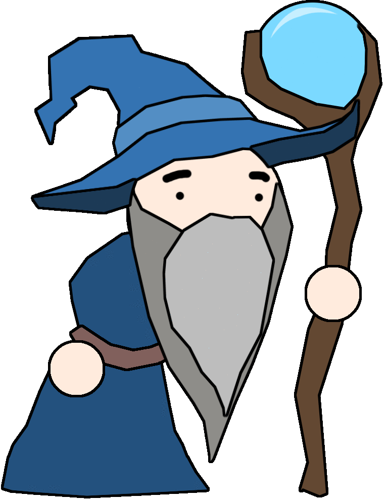
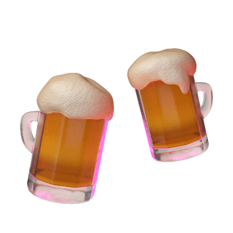
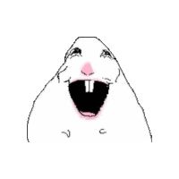
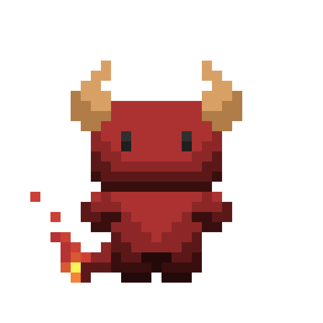

HUZZAHHHH!!! Not only have you saved the hamster but you have also acquired lifelong companions, the devils, they were very pleased with your offering :D (Food is indeed the way to reach ones heart :)). You celebrate your successful endeavor at the tavern, the wizard exclaims, "DRINKS ARE ON ME!". For the rest of the day you and your friends drink to your hearts content. So you see, the journey was the friends you made along the way and peace seems to have been restored.